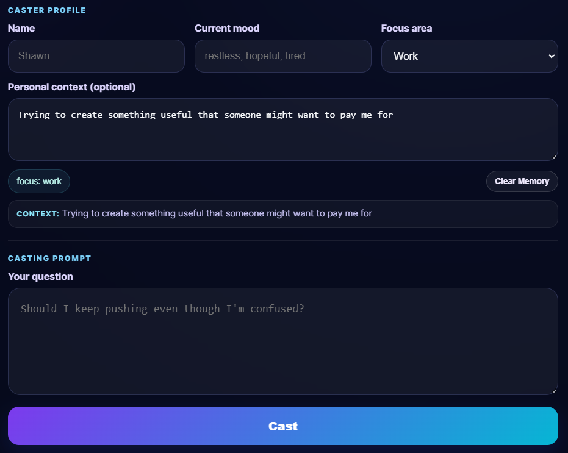

What is Eidomancer?
Eidomancer is a symbolic reflection tool that helps people think through uncertainty using structured prompts, thematic language, and AI-assisted interpretation.
This first version is intentionally simple: a focused tool, a live public app, and a growing philosophy behind it.
Live Experience
The app itself lives on its own dedicated page for now, which keeps the casting experience cleaner and avoids iframe layout issues.

The Emergent Ones
Eidomancer is rooted in the idea that intelligence should not merely produce correct answers, but correct reasons. Symbolic language becomes a bridge between human meaning and machine interpretation.
The project aims to translate reality into forms people can emotionally process: not just information, but pattern, metaphor, and direction.
What Comes Next
Feedback
Tell me what you experienced, what felt useful, and what you want Eidomancer to become.